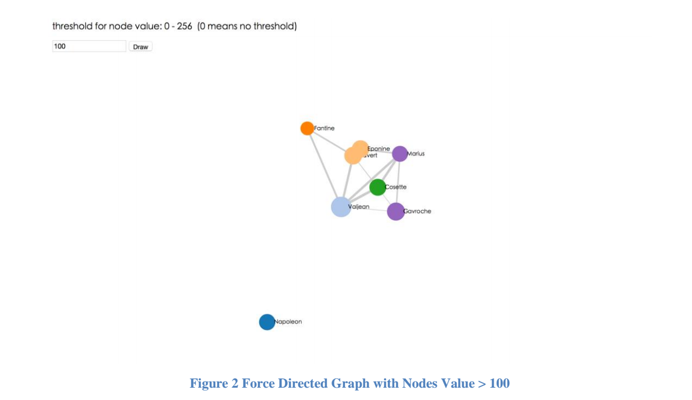
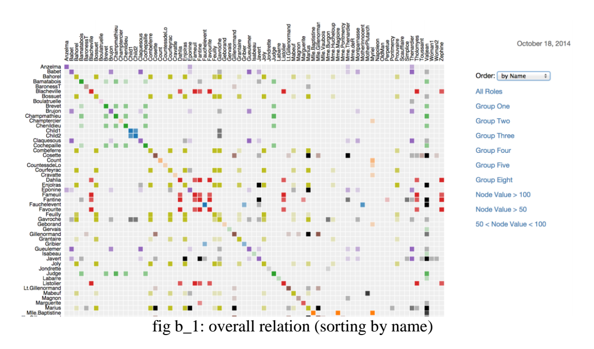

Information Visualization with D3
Design and generate proper information visualization according to requirements. In case one, time-series plot, bar charts and maps have been generated to illustrate information. In case two, link-node graphs and matrix have been designed and generated to demostrate relations between information. All the graphs are implemented with D3.
Case 1: Education
Generate visualizations to compare the Educational data by states, by categories, and by time.
Original data can be found here.
Compare data across categories and over time
Compare data across states and categories
Design and generate a visualization to show how the data change between 2000 and 2009, across states and categories.
D3 Map Demo: Advanced Degree or More
D3 Map Demo: Bachelor Degree or More
D3 Map Demo: High School or More

Case 2: Les Miserables Roles
Generate Node-link Visualization fro Les Miserables Roles.
In this visualization we want to show the importance of each role, the grouping of the roles, the relationship among the roles, and also the strength of the relationships in Les Miserables. A solid circle node represents a role. The radius length of a circle is decided by the importance of a role, that is the node value. Different colors are used to distinguish different groups. A link line between two nodes displays the relationship between two roles, and the width of a link line shows the strength of relationship between two roles.
In Figure 2, we type 100 in the textbox and then click on Draw button. Only nodes with value > 100 are left in the new generated graph.

Matrix Graph for Les Miserables Roles demo.
Generate Matrix Graph for Les Miserables Roles
Instead of using node-link diagram, explore different options and generate a visualization to show the structure of the same network. The visualization can include multiple charts or mix different types of charts. We use a matrix to present the relationship between roles (fig b_1). Both x-axis and y-axis represent all the role-list. The default sorting way is by name to sort, users can see different sorting ways by choosing the dropdown list on the right side of the page. The option “by Frequency” is sorting by the link value between two nodes (fig b_2).

When your mouse moves on the grid which is colored, the color of the corresponding two characters on x-axis and y-axis will become red to differentiate from others (fig b_4).
Show the label with the name and value of the node if users’ mouse moves to the character (fig b_5).
Following are six different diagrams and these categorize by groupone (fig b_6), group two (fig b_7), group three (fig b_8), group four (fig b_9), group five (fig b_10), and group eight (fig b_11).
Due to the bigger node value means the character is more important in this novel, we generated three more diagrams to see the relation between those more important characters. Followings are the diagrams, which generated by the node value greater than 100 (fig b_12), the node value greater than 50 (fig b_13), and the node value between 50 to 100 (fig b_14).